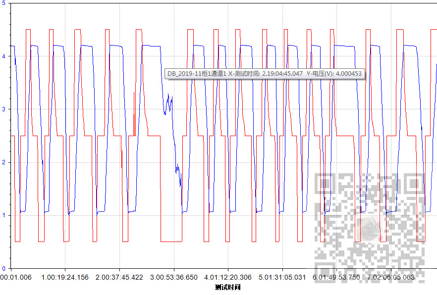

原文出处:本文由博客园博主霸道流氓提供。
原文连接:https://www.cnblogs.com/badaoliumangqizhi/p/12060729.html
原文连接:https://www.cnblogs.com/badaoliumangqizhi/p/12060729.html
场景
Winform中设置ZedGraph鼠标悬浮显示距离最近曲线上的点的坐标值和X轴与Y轴的标题：
https://blog.csdn.net/BADAO_LIUMANG_QIZHI/article/details/103140781
上面博客能实现鼠标悬浮显示最近的曲线上点的坐标值与X轴和Y轴的标题，
如果想要再显示其他信息，比如曲线所对应的文件名等。
那么就要在生成曲线时将自定义要保存的信息与曲线进行绑定存储。
注：
博客主页：
https://blog.csdn.net/badao_liumang_qizhi
关注公众号
霸道的程序猿
获取编程相关电子书、教程推送与免费下载。
实现
ZedGraph的曲线对象是LineItem，其有一属性Tag可以用它来存储额外信息。
在生成曲线时
LineItem myCurve = myPane.AddCurve(yList[i].Title, list, System.Drawing.ColorTranslator.FromHtml(yList[i].Color), symbolType);
//使用曲线TAG存储数据库名 文件名
//文件完整路径
string filePath = compTestDataList[k].ThisDataFile;
//文件名
string fileName = System.IO.Path.GetFileNameWithoutExtension(filePath);
//数据库名
string dBName = System.IO.Directory.GetParent(filePath).ToString();
dBName = dBName.Substring(dBName.LastIndexOf('\\') + 1);
dBName = "DB_" + dBName;
//短文件名
string[] titles = fileName.Split('_');
string shortFileName = "柜" + titles[titles.Length - 2] + "通道" + titles[titles.Length - 1];
myCurve.Tag = dBName + shortFileName;
myCurve.YAxisIndex = i;
生成曲线时使用曲线对象的Tag属性存储了自定义的一些信息。
那么在鼠标的悬浮事件中
tag = nearstCurve.Tag.ToString();完整示例代码
private static string zgc_CursorValueEvent(ZedGraphControl sender, GraphPane pane, Point mousePt)
{
ZedGraphControl zgc = sender as ZedGraphControl;
if (zgc != null)
{
CurveItem nearstCurve;
int i;
Double x = 0.0;
Double y = 0.0;
string xTitle = String.Empty;
string yTtile = String.Empty;
string tag = String.Empty;
string xVlaue = String.Empty;
string z = String.Empty;
try
{
zgc.GraphPane.FindNearestPoint(mousePt, out nearstCurve, out i);
if (nearstCurve != null && nearstCurve.Points.Count > i && nearstCurve.Points[i] != null)
{
z = nearstCurve.Points[i].Tag.ToString();
y = nearstCurve.Points[i].Y;
xTitle = zgc.GraphPane.XAxis.Title.Text;
//获取当前pane面板的YAxis的标题的文本内容,通过nearstCurve.YAxisIndex获取当前距离最近的曲线所对应的Y轴的Index
yTtile = zgc.GraphPane.YAxisList[nearstCurve.YAxisIndex].Title.Text;
tag = nearstCurve.Tag.ToString();
}
}
catch (Exception ex)
{
}
return tag+ " X-" + xTitle + ": " + z + " Y-" + yTtile + ": " + y.ToString();
}
else
{
return String.Empty;
}
}效果
